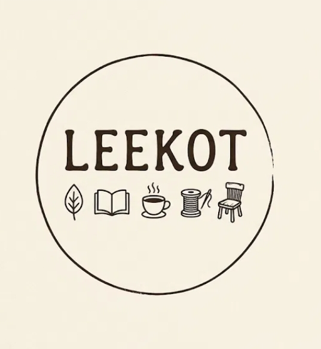
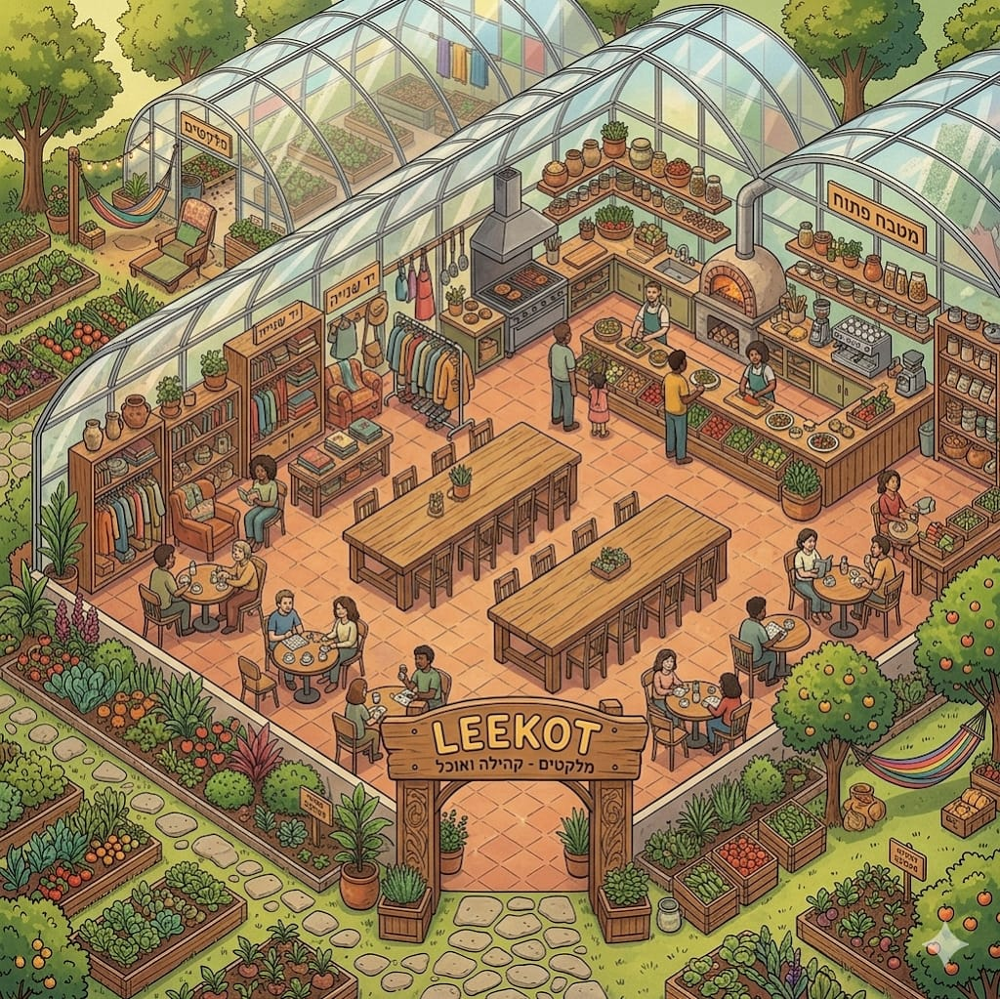

לאסוף את מה שיש.לראות מה אפשרי.
חלל קהילתי בחממות של נתיב העשרה — בית קפה עונתי, יד שנייה, אמנות, סדנאות ומפגשים איטיים בין אדמה לאנשים.
גלו את LEEKOT
הפילוסופיה
ללקט זה לשים לב
מלקטים לא ממהרים. הם הולכים לאט, מתכופפים, ומרימים את מה שאחרים עברו לידו. כך אנחנו בונים מקום — מחומרים, מאנשים ומרגעים שקיבלו הזדמנות שנייה.
אדמה
ירקות מהערוגות שמחוץ לחממה, תפריט שמשתנה עם העונה, וידיים שנוגעות בעפר.
חידוש
כיסא שהתקלף, בד שנשכח, ספר שחיכה על מדף — כל אחד מהם מקבל כאן חיים חדשים.
קהילה
שולחנות ארוכים, קצב איטי ומקום לכל אחד ואחת — בדיוק כפי שהם.
יש דברים שהעולם החליט לזרוק. אנחנו החלטנו להרים אותם.
בחממות